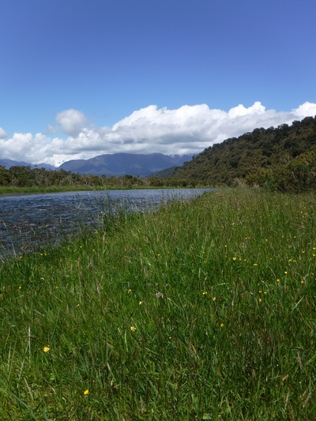
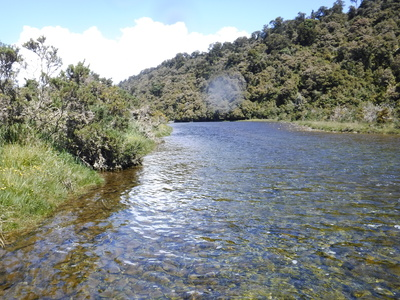
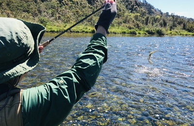
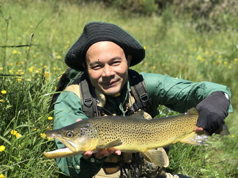
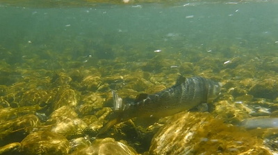
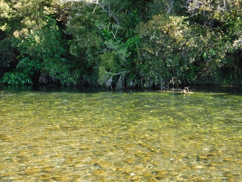
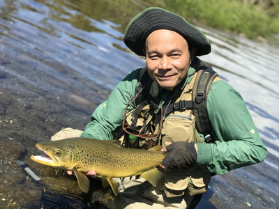
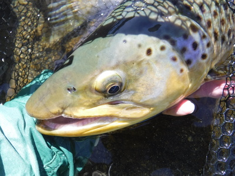
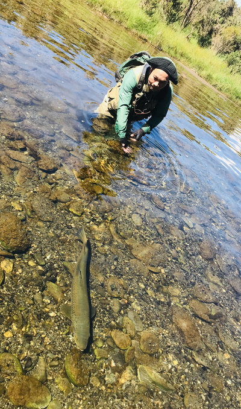

釣行日誌 ＮＺ編 「一期一会の旅：A Sentimental Journey」
テールウォーク
11/22(THU)-6
今度は川の真ん中に太い流木が突き出している場所に来た。ディーンが指さす方向には、流木の幹の上流50cmほどの位置に良型のブラウンが定位しているのが僕にも見えた。かなり水面に近い。今度も彼のアドバイスに従ってオリーブ色のフォーム・アントを選び、ティペットを点検し、結び直す。サイズは#12くらいでけっこう大きい。
慎重に流れの中に立ち位置を決め、キャストを始める。ディーンの指示で左右と距離を調節し、４投目くらいでフィーディングレーンにアントが浮かぶ。ラインを手繰りながらドリフトさせてくると、いったんは無視したかに見えたので油断したら、鱒が不意に浮上・反転して追い喰いした。
『ううっ！ １、２、３っ！』
しっかり間を置いて合わせたが、アントは鱒の口からすっぽ抜けてきた。
「今のはちょっと遅かったな。残念！」
ディーンが声を掛けてくれる。これまで早合わせでは数え切れないほど失敗してきたが、遅すぎたのは初めてであった。今のブラウンはフライに対して少々疑念を抱き、それで早く吐き出したのかもしれなかった。さ、めげずに次だ。
牧歌的な風景の中を、ひたすら魚影を求めて遡行して行く。歩くのは少々しんどいが、至福の時間である。

広い瀬尻の流心脇の弛みで、ディーンが１尾スポットした。またしても僕には何も見えない。流れは浅いし、あいつにはセミが良いんじゃないか？と彼は言いつつ、やはりオリーブ色のフォーム・シケーダを結んでくれた。夏場に使うセミのパターンよりは２回りほどサイズが小さい。

「鱒の位置をロッドで指してみて。」
ディーンが言うので、大体あの辺かな？と竿先を想像する方向に向けると、
「50cm右。」
修正。
「よし、あそこに居るぞ。」
そう言われてもやはり何も見えない。が、距離は十分僕の射程内のようだ。落ち着いて、長過ぎず短過ぎずを心がけ、大きめのセミフライを流れの撚れ目に浮かべる。緑色の大型ドライフライが揺れながら流れ下って来る。不意に水中から黒褐色の魚影が浮かび出て、シケーダを追い喰いした。
『よしっ！』
さっきよりは若干早めにロッドを立てると、ずっしりと魚の重みがロッドに載り、次の瞬間大きなジャンプを魅せた。

竿を高く保持し、ラインを強く握って堪えるとブラウンは下流へと突進しながら水面上でテールウォークを披露した。
『なんとっ！』
ウェストランドのブラウンの見事なジャンプはこれまで何回も見て来たが、連続的なテールウォークは初めての体験である。
『すっげぇ～！！』
ジャンプ、テールウォーク、さらなる逸走を堪えながらファイトの主導権を鱒から取り戻すと、ディーンに教わったとおり、ロッドを下流側に水平に倒し、サイド・プレッシャーを掛けて魚体を岸辺に誘導する。彼が水に入れて沈めて待ち構えたネットの上まで寄せてくると、すっとネットを揚げてすくい込んでくれた。
「やったぁ～！！」
「Good man!」
川に居着きの鱒らしく、やや鈍い色合いの１尾だったが、下顎のしゃくれた立派な雄だった。

ディーンとがっしり握手を交わした後で写真を撮し、大事にリリースする。ブラウンは元気に泳ぎ去ったが、無事に快復して生き残ってくれることを願った。

再び遡行を始め、30分ほど歩くと、流れのほとんど無いだだっ広い大きな瀬？浅い大淵？に出た。ディーンの後を付いて静かに歩みを進めて行く。対岸は藪に覆われた崖で、あちこちに雰囲気の怪しいポケットが点在している。居るとすれば岸沿いの藪下ぎりぎりに潜んでいるだろうとのことなので、今度はブラインドで、再度結び替えたフォーム・アントをキャストして、下流から順にかなり長い距離を探って行く。どこにでも居そうに見えるし、どこにもいないとも見える。こういうポイントでのブラインドフィッシングは、サイトフィッシングとは別の緊張感と忍耐力が要求される釣りだ。

僕のキャストは相変わらず手首がカックンカックンだったので、自分でファイティングバットを袖に差し込んでからキャストを続ける。
５つ目か、６つ目のポケットで、ごくゆっくりと流下してゆくアントに黒い鼻先が浮かんできて覆い被さり、そして沈んだ。
「出たなっ！」
筋肉痛の左腕でロッドを大きく立て、右手でラインを引き、しっかりと合わせる。最初のダッシュで鱒が下手に走る。下流の倒木の固まりに入られないようやや強引に川の真ん中に引きずり出し、ラインのテンションを失わないよう気をつけて魚をいなす。ティペットは十分強い。こちら岸に近くまで誘導してしまえば、もう障害物の無い広い瀬の中なので、安心してファイト出来た。ディーンの落ち着いたランディング。そして握手。
「お見事だったよ。」
「サンキュー！！」


ネットの中でしばらく休ませてから、優しくリリースしてやった。

釣行日誌ＮＺ編 目次へ
サイトマップ
ホームへ
お問い合わせ